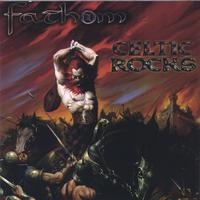

| Artist: | Fathom |
| Title: | Celtic Rocks |
| Label: | Independent |
| Length(s): | |
| Year(s) of release: | 2005 |
| Month of review: | [10/2007] |
| 1) | King Of The Faeries | 4.51 |
| 2) | Mystery | 4.29 |
| 3) | Foggy Dew | 2.50 |
| 4) | Ireland | 2.50 |
| 5) | Prelude To A Whiskey | 1.54 |
| 6) | Whiskey In The Jar | 5.06 |
| 7) | Give It To The Wind | 4.06 |
| 8) | Pigeon On The Gate | 5.30 |
| 9) | Back Home In Derry | 3.53 |
| 10) | Banshee | 2.24 |
| 11) | Stone In The Field | 4.06 |
| 12) | Battle Of Ballylochlan | 3.54 |
| 13) | The Two Towers | 9.28 |
| 14) | Wild Rover | 3.14 |
The band combine folk classics (such as The Wild Rover, but also Whiskey In The Jar, sung in a way that seems an ode to Lynnott's inebriations) with self written material. The guys emanate a nice bit of enthusiasm, but both the recording quality and the certainty (or lack thereof) of their delivery spells that these guys could take some steps towards more professionality. Their performance sounds somewhat loose (as opposed to tight) on both guitar and vocals. Difficult to pin down, but it's there.
The Two Towers steps outside the borders laid down for the rest of the tracks. This track has a feel close to prog metal, although not fully there. Possibly because of the genre's novelty to the band, a vein that feels unnatural to them, helping in creating a song that does not really belong on this album. DiBartolo's vocals already stay clear of being an asset on the other tracks, but pulling of this track is clearly outside his grip. Mystery is less striking as different, still its origin is more of a progressive nature than the majority of the material.